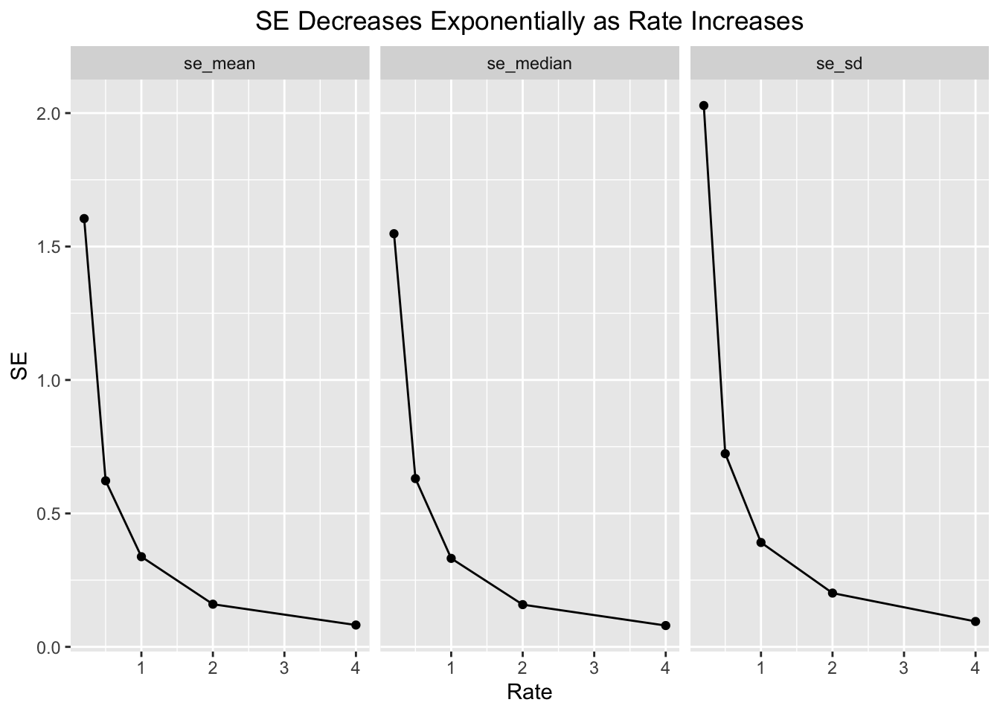

── Attaching core tidyverse packages ──────────────────────── tidyverse 2.0.0 ──
✔ dplyr 1.1.4 ✔ readr 2.1.5
✔ forcats 1.0.0 ✔ stringr 1.5.1
✔ ggplot2 3.5.1 ✔ tibble 3.2.1
✔ lubridate 1.9.4 ✔ tidyr 1.3.1
✔ purrr 1.0.2
── Conflicts ────────────────────────────────────────── tidyverse_conflicts() ──
✖ dplyr::filter() masks stats::filter()
✖ dplyr::lag() masks stats::lag()
ℹ Use the conflicted package (<http://conflicted.r-lib.org/>) to force all conflicts to become errors
1. Visualizing the Exponential distribution
The normal distibution is fun, but let’s play with another one! The exponential distribution is a continuous distribution that is bounded at 0 and has an infinitely long tail. It’s skewed to 0, and takes a rate as it’s argument to determine its shape.
1a. Make a tibble that has two columns. The first is a sequence of 200 evenly spaced numbers between 0 and 4. Let’s call that column x. The second is 5 values for rate - c(0.2, 0.5, 1, 2, 4). Let’s get all possible combinations of the two (some function in tidyr will do….)
# Make a tibble with two columns# First column is 200 evenly spaced numbers between 0 and 4my_tib <-tibble(x =seq(from =0, to =4, length.out =200)) |># For each value x, create 5 rate values c(0.2, 0.5, 1, 2, 4)group_by(x) |>reframe(rate =c(0.2, 0.5, 1, 2, 4))# NOTE - I don't think we used the seq() function in lab. I wasn't sure how to approach# evenly distributing 200 values between a set range, and found seq() with a google.# This appears to also work, using crossing from tidyr:# my_tib <- crossing(# x = seq(from = 0, to = 4, length.out = 200),# rate = c(0.2, 0.5, 1, 2, 4))# Or this:# my_tib <- tibble(x = seq(from = 0, to = 4, length.out = 200)) |> # crossing(rate = c(0.2, 0.5, 1, 2, 4))
1b. Now, how do you make those sweet sweet probability densities? Why, with a d*() function! In this case, dexp(). Make a column that gets the probability density of the exponential distribution for each value of x and rate. You might want to look at the help file to see how to use dexp().
1c. Plot how the density of the exponential changes with rate using the tibble you just generated. How do things change with rate?
# plot probability density for each x, colored by rateggplot(data = my_tib, mapping =aes(x = x,y = prob_density_exp,color = rate)) +geom_point() +labs(title ="Exp Dist Curve Steepens with Increasing Rate",y ="Probability Density") +theme(plot.title =element_text(hjust =0.5)) # center title
As the rate increases, the curve of the exponential distribution steepens (skewed even further towards 0).
2. Precision and Sampling the Exponential
2a. To start to sample, let’s begin by building up a set of parameters that link up with simulations. We are going to explore how rate changes the standard error of different properties from our sample. Let’s start by creating a tibble or data frame that has one column for simulations (1 through 1000) and one column with rates. Let’s use the rates from before - c(0.2, 0.5, 1, 2, 4).
# Make a tibble with simulations column, 1:1000simulations <-tibble(sims =1:1000) |># and one column with rates c(0.2, 0.5, 1, 2, 4)crossing(rate =c(0.2, 0.5, 1, 2, 4))
2b. Great! Now simulate your sampling of exponential populations! Assume n = 10. To check yourself, your resulting data frame should be ungrouped and have 50K rows.
simulations <- simulations |># for each simulation and rate combinationgroup_by(sims, rate) |># sample using rexp() with n = 10, rate = ratereframe(sample =rexp(n =10, rate = rate))
2c. Now, for each simulation (and rate!) get the sample mean, median, and SD.
simulations <- simulations |># for each simulation and rate combinationgroup_by(sims, rate) |># calculate the mean, median, and SD of the 10 sampled valuessummarize(sample_mean =mean(sample), sample_median =median(sample),sample_sd =sd(sample),.groups ="drop") # rather than using ungroup(), ungroup within summarize()
2d. So, how does rate influence the SE of each of these properties? First show with a table and then a plot. One plot with three facets (get your pivot on!) For your table, try out knitr::kable() or the gt package.
# Create a new table for the SEs of each statisticse_table <- simulations |># for each rate calculate the SE of each statistic# as the SD of the sample statistics across simulationsgroup_by(rate) |>summarize(se_mean =sd(sample_mean),se_median =sd(sample_median),se_sd =sd(sample_sd)) |>ungroup()# Create a table with knitr::kable()knitr::kable(se_table)
rate
se_mean
se_median
se_sd
0.2
1.6047910
1.5481206
2.0282821
0.5
0.6223261
0.6305774
0.7238212
1.0
0.3378784
0.3315848
0.3910739
2.0
0.1599021
0.1582831
0.2015601
4.0
0.0818512
0.0799045
0.0952020
# Plot SE of each statistic against the rate# pivot se_table long so we can plot the rate against all values at oncese_table_long <- se_table |>pivot_longer(cols =!rate, names_to ="statistic", values_to ="se_value")# plot SE against rateggplot(data = se_table_long, mapping =aes(x = rate, y = se_value)) +geom_point() +geom_line() +facet_wrap(~statistic) +labs(title ="SE Decreases Exponentially as Rate Increases", x ="Rate",y ="SE") +theme(plot.title =element_text(hjust =0.5))

For each metric (mean, median, and SD), as the rate increases the SE decreases, apparently exponentially.
2e. Do these results surprise you or are they predictable given the plots of exponential distributions you made in #1?
I would argue these results are predictable.
In the plots of exponential distributions made in #1, we can see that as the rate increases, the distributions becomes steeper, with much greater probability densities around lower values. Since the the values are bounded by 0 (can’t be negative) increasing the rate “compresses” the likely range where our values will be generated when we randomly sample the exponential distribution model. These more tightly packed values at higher rates would result in lower SEs for mean, median, and SD.
Meta Questions
Meta 1.
Whew. We covered a lot this week. Sample distributions, sampling distributions, and simulation. How much of this was new to you? How much of it was familiar or at least made sense? How much was totally alien and offputting?
It all feels new to me. I may have covered some of this in my undergrad stats classes, but that was 6-10 years ago at this point.
A lot of it made sense, but I am definitely not confident yet in when and where I apply certain terms and how to determine them based on one another. Just one example, there is the standard formula for SE of the mean based SD and n, but then I’m confused why with modeled simulations we were able to just calculate the sd of the various sample statistics to determine their SE.
I’m also still not sure when to say variability vs variance. There’s just a lot of lingo.
Frankly, I’m not feeling super confident at the moment.
Meta 2.
What are possible uses you could see using simulations for?
I guess broadly I understand that people use models to predict real world scenarios. You can then use the likelihood of certain outcomes, based on the parameters you fed the model, to estimate what is most likely to be true or to happen in various scenarios.
Meta 3.
How did your progress through this assignment feel after lab? Did you find yourself speeding up as you went along? Are there things that clicked for you along the way? Lightbulbs going off.
Definitely some light bulbs, such as understanding more completely certain functions, and concepts like generating random values based on different distributions. I feel like this was our first homework where we had to apply novel statistical concept in code, which meant for me that most of the time was spent reviewing the in-lab code and double checking my understanding of various concept, rather than actually writing code. I wouldn’t say I sped up as I went along, but I understood what we did in lab more.
Meta 4.
There are a lot of things that also re-appear this week. ggplot, tidyr and pivoting, dplyr, pipes, and more. Are they becoming old friends? What apsects of them are you still struggling with, if at all?
The basics of them are definitely becoming old friends, but frankly now that we’re getting into heavier concepts, I find myself less motivated to explore new details. A primary example is I am not taking the time to fine tune and cusomize my ggplot figures or try to geoms, because I want to be sure I have time to get through the main goals of the homework.
Meta 5.
How much time did this take you, roughly? Again, I’m trying to keep track that these assignments aren’t killer, more than anything.
Including these meta Qs, this one took me about 3.5 hours. Much of that time was spent reviewing concepts to make sure I was understanding the questions correctly.
Meta 6.
Please give yourself a weak/sufficient/strong assessment on this assignment. Feel free to comment on why.
Strong. As always, I made sure I understood concepts and the code from lab prior to moving forward, and I believe I clearly and correctly adressed each question.